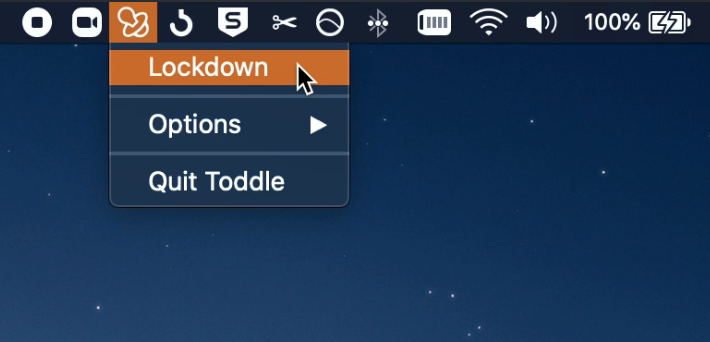

Download and unzip, then move into your Applications folder.

Go to your Applications folder, then open Toddle by holding the 'control' key and clicking on the Toddle icon. Keep holding the 'control' key and select 'Open'.
When prompted, you need to open System Preferences and allow Toddle to control your computer. This is required in order to disable the keyboard and mouse — nothing else!

Once opened, you can lock the keyboard and mouse by selecting "Lockdown" from the status bar menu.
You'll be asked to choose a password that you will use to unlock the keyboard and mouse when you're ready.

Once locked, just enter the password you chose to unlock, and that's it :)